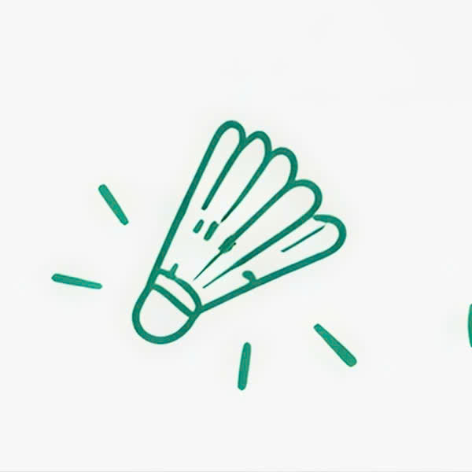
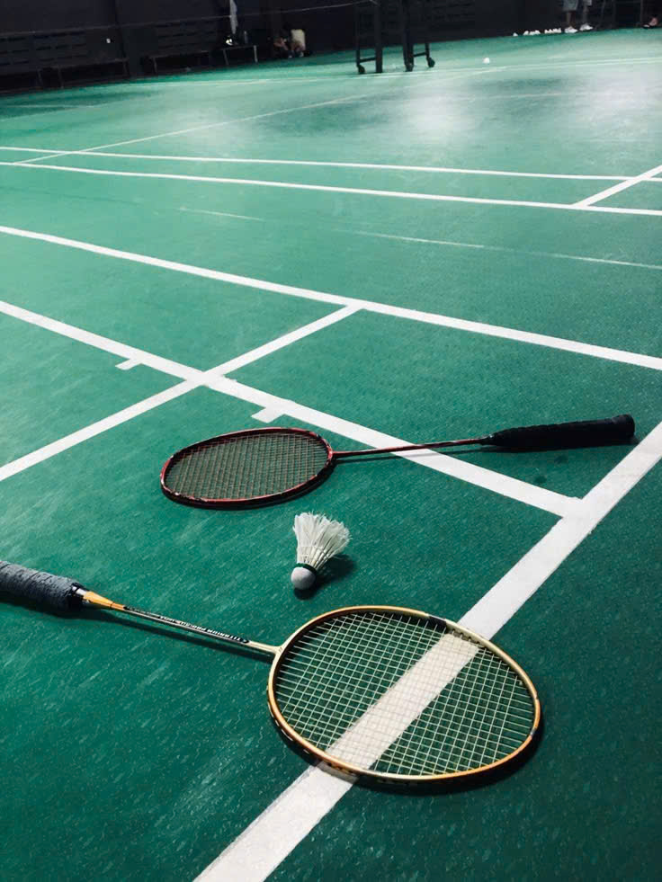

Badminton Plus ra đời với mong muốn đơn giản hóa việc đặt sân, giúp người chơi dễ dàng tiếp cận và chủ động hơn trong việc lựa chọn khung giờ chơi phù hợp với bản thân, đồng thời xây dựng một cộng đồng thể thao gắn kết và văn minh.